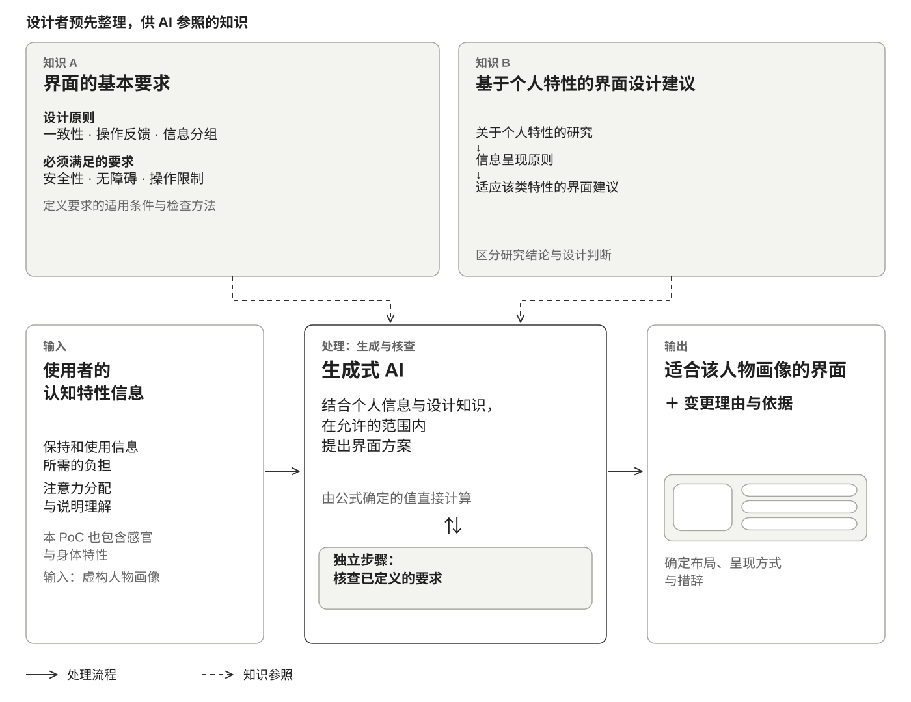
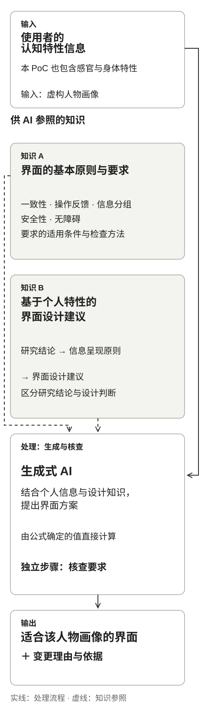
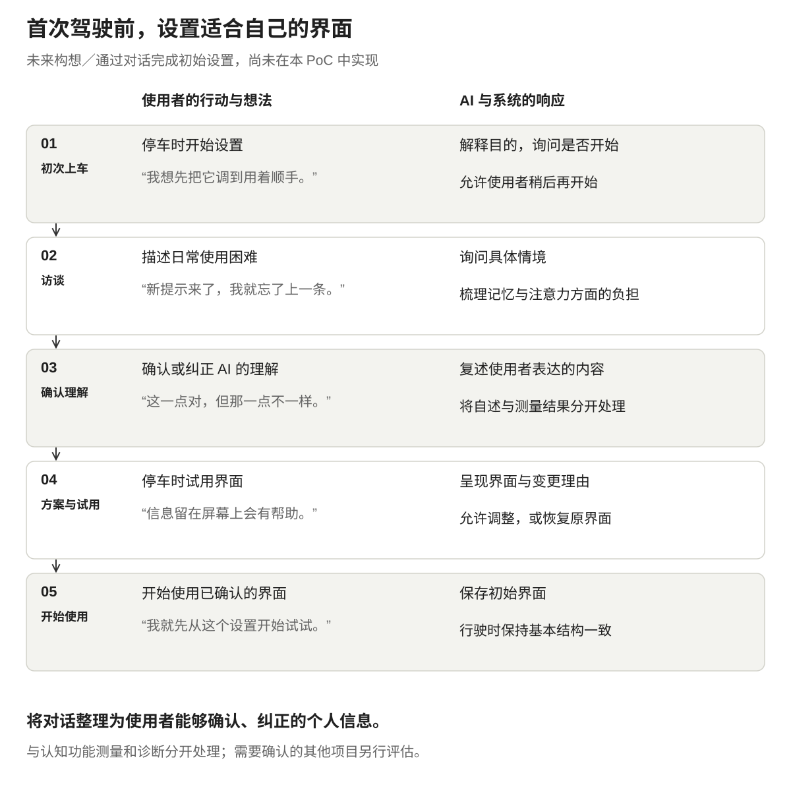
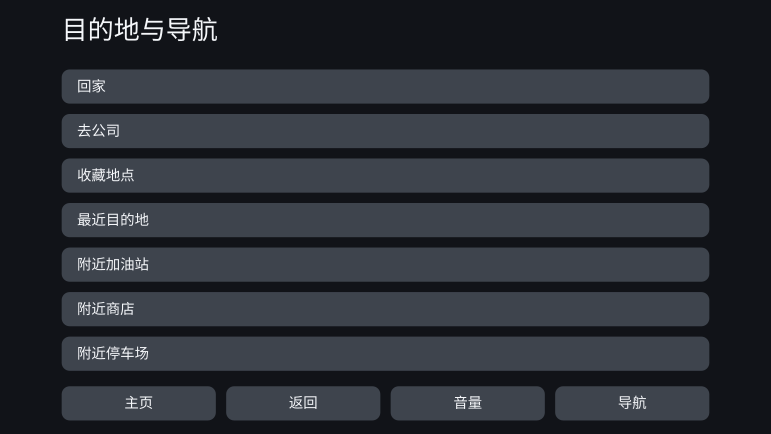

以约束驱动设计，实现界面个性化
2026年8月
概述
提出一套机制：输入关于认知特点的个人信息，参照界面的基本设计原则、安全与无障碍条件，以及关于人的特点的研究结论，生成贴合这个人的界面。
我把这一方法称为“以约束驱动设计”：人来定义必须满足的要求及其适用条件，生成式 AI 在这些边界内提出具体方案。我以车载导航为案例，构建了一个概念验证原型（PoC），为 13 个包含感官和身体特性的虚构人物画像生成界面，并在独立步骤中核查输出是否符合要求。
比较发现，一个体现身体特性的案例出现了明显的布局变化，而多数输出的视觉变化很小。尚未通过用户测试评估可用性与安全性。这项工作帮助我明确哪些决定可以交给生成式 AI，哪些要求限制了个性化的空间。
背景 —— 一套界面究竟能覆盖到哪里
多数产品会设计并提供一套尽可能多人可用的通用界面。然而，一次能掌握的信息量、注意力投放的难易、语言表述的理解难度、精细操作的顺手程度，都因人而异。通用界面照顾到了很多人，却未必贴合其中的某一个人。
以群体为单位的评估同样有其局限。例如美国 NHTSA 于 2013 年公布的自愿性指南中，关于视线的各项接受标准要求 24 人中至少 21 人达标。这并不是一个意味着所有人都能同样使用的条件。[1]
即便产品可以更改字号或显示信息量，使用者也必须先注意到设置的存在，把它和自己的不便联系起来，再选出合适的调整。设置功能是不是没有被充分利用，人们就这样在不合适的状态下继续使用？这个疑问是本项目的起点。
在车载导航中，看屏幕与做操作会与驾驶所需的注意力相竞争。[1] 如果与界面的不匹配可能加重这份负担，那么在开始使用时就准备好贴合这个人的状态，从易用性与安全两方面都值得考察。
生成式 AI 让我能够把结合个人信息与设计知识生成界面的流程做成原型。我探索这种方式能否减少为每个人手工设计独立界面的工作。
设置功能的使用率，以及与界面的不匹配对事故的影响，本项目并未验证。
提案 —— 把个人信息与两类设计知识连接起来
系统接收与界面使用相关的个人认知特性信息。本次概念验证使用的是虚构人物画像，其中也包括感官和身体特性。AI 将这些信息与预先准备的两类知识一起考虑：界面的基本设计规则，以及将人的特性与界面设计建议联系起来的知识。
AI 在允许的边界内生成界面，再由独立的检查步骤核查是否符合要求。输出包括为该人物画像定制的界面，以及改了哪些地方、为何改动的说明。


输入：关于这个人的信息
输入信息包括：一个人保持并使用信息是否容易，是否容易受到其他刺激干扰，以及哪类说明更容易理解。实现也覆盖了视觉与手部精细操作能力。系统使用与界面交互有关的信息，而非仅凭诊断名称决定界面。
参照知识 A：界面得以成立的规则
整理界面的基本设计原则：一致性、对操作的反馈、信息的归组、文字与操作对象是否易见等。在此之上，把车载界面的操作限制与无障碍条件，连同其适用情形一并定义。
参照知识 B：由特点通向推荐界面的知识
把研究中确认的人的特点，连接到信息呈现的原则，再连接到界面设计。例如针对「一边记住信息一边操作会有负担」这一特征，考虑「减少需要记住的内容」这一方向，进而落到把必要信息留在画面上的设计。
不过，关于特点的研究未必能直接给出车载导航的设计取值。研究已经弄清的事，与本项目由此得出的设计判断，要加以区分。 对所有人都同样有效的改进归入基本规则，不计入个性化的成果。
体验构想：首次驾驶前，找到适合自己的界面
面向未来的构想。 通过对话完成初始设置，在本次 PoC 中并未实现。
想象一下，第一次坐进一辆新车的驾驶座。车辆停稳时，AI 助手会询问你平时使用界面的经历。你不必逐项调整专业设置，只需描述遇到的困难，以及哪些方式更适合自己。

-
首次驾驶前：开始对话
AI“为了把画面调整到您用着顺手，能否告诉我几点您平时的使用方式？也可以稍后再开始。”
使用者理解其目的，选择现在开始还是稍后再说。
-
访谈：说说困扰
AI“当导航提示接连出现时，通常在哪些地方会变得不好理解？”
使用者“下一条说明一来，我有时就忘了刚才那条的内容。”
AI 询问具体场景，整理出与信息保持、注意力投放相关的使用困难。
-
确认理解：可以纠正 AI 的理解
AI“比起记住步骤再往下走，让需要的信息留在画面上会更好用——我这样理解对吗？”
使用者确认并纠正这一理解。对话中获得的自述，与认知功能的测量值或诊断分开处理。对需要测量的项目，另行准备确认的方法。
-
提案与试用：听过理由，再试画面
AI“为减轻需要记住的负担，我提议一种能同时看到当前操作与下一步的画面。”
使用者在停车时试着选择目的地等。可以说「之前那个更清楚」「这里想换个说法」，必要时可以调整提案，或退回原来的界面。
-
开始使用：使用确认过的界面
把使用者确认过的界面保存为初始状态。行驶中维持使用者已经记住的基本结构。想重新调整时，可以在停车时再作调整。
对话的目的不是把使用者一次性归类，而是通过一段他本人能够说明、能够纠正的往来，把开始使用时的状态准备好。
实现 —— 把须守住的条件与交给 AI 的判断分开
本次实现的是这样一套机制：接收个人的特点信息，生成界面，再检查、绘制并对比。作为替代对话询问的输入，定义了十三种特点各异的虚构人物画像。
选择车载导航作为验证题材，是因为画面面积、操作对象的大小、可显示的信息量、行驶中的操作等条件都能被具体地处理。
以约束驱动设计的方法
在本项目中，以约束驱动设计是指：人来定义要求及其适用条件，AI 在这些边界内提出方案。
在基于规则的参数化变更中，输入与取值或选项的对应是事先定好的。本次构想不去填满全部对应，而是定下允许的范围与判断依据，把尚未确定的具体取值与表述留给生成式 AI 裁量。实现上把由计算决定的部分与由生成式 AI 决定的部分组合起来。
| 依据能说明什么 | 在实现中的处理 |
|---|---|
| 连取值或关系式都能确定 | 在已确认的条件与适用范围内计算 |
| 知道调整方向，但程度无法确定 | 在守住方向与约束的范围内具体化，并留下「这是未经验证的设计判断」的记录 |
| 仅凭依据无法确定妥当的选择 | 作为探索性提案处理，并标记为需要评估 |
把研究结论落到界面上时，记录了出处、适用条件与设计判断。通过与界面一并输出变更理由，使「为什么对这个人是这样的画面」可以被追溯。
以独立步骤检查生成的界面
系统以结构化数据描述界面元素及其布局，再根据这些数据渲染界面。代码检查数值与结构要求；另设的大语言模型（LLM）检查步骤，评估部分需要理解语义的要求。系统还会记录自动检查范围之外的项目，以及因信息不足而无法验证的项目。
检查所确认的是「是否符合已定义的条件」。实际是否好用、安全性是否提升，则需要由使用者来评估。
如果在设计阶段发现要求之间存在冲突，AI 会指出问题，再由人决定如何修订。AI 不会在每次生成界面时自行更改要求。
界面对比 —— 变化很大的例子与几乎没变的例子
对比基准是不输入个人特点、以通用默认值生成的界面。在功能集合相同的前提下，比较输入个人特点后的输出。
以下图像是原型的输出，并非市售车载导航改造前后的对比。 人物画像也不是对真实用户的再现，而是为确认特点影响而设的虚构输入。
操作对象变大的例子
PS-12｜带有「精细触控操作困难」这一身体特点的人物画像
与作为基准的 PS-01 在年龄、认知、感官特性上保持一致，只改变手指操作特点。在所示图像中，各操作对象变大，画面中部排列的条目由 7 条减为 4 条。底部的固定按钮不计入这一数量。
通用默认界面


把操作对象放大是有代价的：同一画面上一次能选择的条目变少了。设计目标是保留相同的功能集合，但仅凭这一屏，无法评估通往后续画面是否依然顺畅。
结构几乎没有变化的例子
PS-01｜设为基准的人物画像
字号上虽有细微差别，但条目数量、布局、触控区域的大小几乎相同。在本次的规则与输入组合下，并未得到相对通用默认界面大幅改变结构的结果。
通用默认界面



结果与讨论 —— 生成的自由度留在了哪里
生成式 AI 的额外价值尚未得到证明
在我的目视比较中，PS-12 是唯一出现明显布局变化的输出。其他输出虽然在措辞和设置上有所不同，但外观并未呈现出显著的价值差异。
PS-12 的改动也在「调整显示尺寸与显示量」的设置所能实现的范围之内。不必自己去找设置、初始状态就已准备好——这种体验是有潜力的。但这种体验的价值，与「生成界面是否需要生成式 AI」，必须分开验证。
本次 PoC 并未证明贴合认知特点能改善操作成绩，也未证明生成式 AI 做出的界面优于基于规则的方式。
本次构建的设计空间过窄
在确保文字与操作对象所需尺寸、并套用画面面积与显示量的条件之后，可选的结构就越来越有限。实现上由计算或固定结构决定的部分也不少，AI 在多个妥当方案之间挑选的余地很小。
措辞的改写上还留有自由度，但这类差异不像画面结构那样显眼，本次目视评估难以充分捕捉其价值。我认为，要确认生成式 AI 的价值，需要可选方案本身具有幅度，且这些差异对使用者的体验具有意义。
这一结果只针对本次收集的规则、采用的界面参数与实现的表现范围，不能说是车载导航整体或个性化界面整体的极限。
另外，我并未逐一直接查阅 JIS、ISO 等相关标准的全部正文，而是以论文、官方指引、公开数据、部分标准正文或预览等可获取的资料为基础构成设计知识。参照范围有可能影响了可采用的设计选项。不过，细读标准正文究竟会拓宽自由度，还是会因附加条件而进一步收窄，仍有待今后确认。
与 AI 的协作，带来了规则本身的改进
成果同样出现在「设计用于生成的条件、并使其可被检查」的过程之中。
| 发现的问题 | 在设计上的反映 |
|---|---|
| 同一元素存在多个下限，组合方式含糊不清 | 明确了适用关系，使任一下限都不会被突破 |
| 本应只在行驶中适用的条件，在停车时也被套用 | 明示了每项条件适用的行驶状态 |
| 把措辞的易懂程度与是否配有图标合并成了一个维度 | 将其拆为彼此独立的设计维度，找回了被无谓排除的选项 |
| AI 把并不适用于某项输出的条件也当成了判断依据 | 针对每项输出，明示了应参照的条件 |
| 原本打算留给 AI 的判断，被固定在了实现一侧 | 重新审视了规格与实现之间的分工 |
AI 指出问题，人来判断，再反映到设计中。经由这样的往返，哪些要共同守住、哪些可以贴合个人变得清晰了。
今后 —— 确认体验的价值与生成式 AI 的价值
接下来想把两个问题分开验证。
其一，不必自己设置、开始使用时界面就已准备好，这样的体验究竟有多大价值。为此要实现对话询问、纠正理解直至试用的全过程，确认输入信息的可靠程度与给使用者带来的负担。
其二，在什么样的设计对象上，生成式 AI 带来的方案差异才会转化为体验的改善。希望拓展到这样的对象：在守住必要条件的同时，信息结构与操作流程上仍留有多个妥当方案。
在真实用户的评估中，把通用默认界面、由个人信息按规则调整的界面、由生成式 AI 具体化的界面放在同一任务下比较。通过操作时间、误操作、视线、主观负担等指标，分别考察「贴合个人」的效果与「使用生成式 AI」的效果。
同时推进对相关标准的查证，更新「研究已确认之事」与「设计判断」之间的边界。除了条件可被检查之外，把「在条件之内为使用者留下有意义的选项」作为下一个课题。
参考资料
- NHTSA，Visual-Manual NHTSA Driver Distraction Guidelines for In-Vehicle Electronic Devices（2013 年公布）。自愿性指南。关于视线的接受标准见 VI.E，关于注意力偏离与风险的说明见正文 I.C 等处。这并不意味着本 PoC 已获得符合该测试的认证。阅读《联邦公报》中的文件